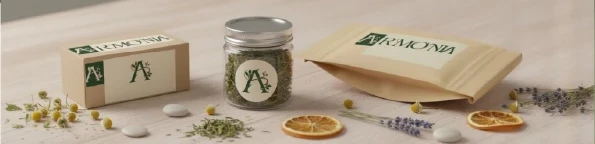
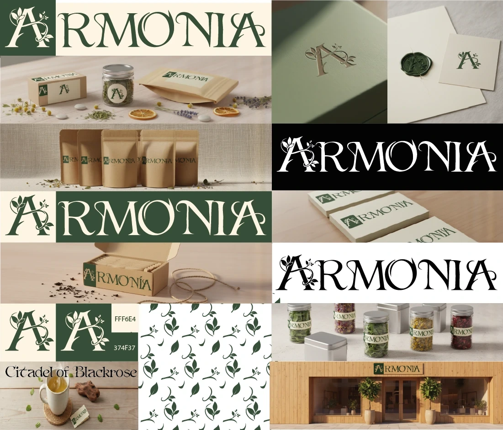

Mockups con IA: cómo muestro una marca antes de producirla
Un logo sobre fondo blanco no vende una marca. Así uso la inteligencia artificial para que el cliente vea su identidad en cajas, frascos y hasta en una tienda, y decida con seguridad.

Cuando presento una identidad de marca, el cliente no necesita ver un logo sobre un fondo blanco: necesita imaginar su marca viva, en el estante, en la mano de su comprador o en la fachada de su tienda. Hasta hace poco, lograrlo significaba imprimir prototipos o recurrir a plantillas de mockup que todo el mundo ya ha visto. Hoy uso la inteligencia artificial para crear mockups a la medida de cada proyecto.
El mejor ejemplo es Armonía, una marca de aromáticas premium y accesible que diseñé a comienzos de 2026.
El problema: decidir sin ver
Un emprendimiento no siempre puede pagar la impresión de prototipos de cada pieza antes de aprobar su marca. Sin embargo, es justo en ese momento cuando más necesita certeza: elegir una identidad es una inversión que va a acompañarlo durante años.
1. Primero la identidad, después la IA
La IA no diseña la marca. El concepto, el logotipo, la paleta y la tipografía nacen del encargo del cliente y del trabajo de diseño. En Armonía, el cliente solo tenía el nombre y buscaba una marca elegante, natural y económica; de ahí salió una A de la que brotan tallos y hojas, una paleta de verde bosque y crema, y una tipografía de inspiración clásica. Solo con ese sistema listo pasé a los mockups.

2. Escenas pensadas para el negocio
Cada escena responde a una pregunta del cliente: ¿cómo se ve en una tienda?, ¿y en una reunión de empresa?, ¿y en la casa de un consumidor? Armonía quería venderse tanto a empresas como a personas del día a día, así que las escenas mostraron cajas, bolsas kraft, frascos, papelería con lacre, tarjetas, un momento de consumo con una taza y la fachada de una tienda.
3. Revisar cada detalle
Una imagen generada puede verse espectacular y aun así tener errores. Por eso reviso cada mockup antes de presentarlo, con la misma exigencia que una pieza impresa.
- Que el logotipo no se deforme ni cambie de proporciones.
- Que los colores coincidan con la paleta de la marca.
- Que no aparezcan letras inventadas ni textos sin sentido.
- Que materiales y escenarios sean coherentes con el precio y el público.
4. Decidir con seguridad
Con los mockups, el cliente pudo ver su marca completa antes de invertir en producción y aprobarla con tranquilidad. Hoy Armonía usa su marca en sus productos, y el sistema quedó listo para sumar nuevos sabores.
Lo que me llevo
- La IA acelera la presentación, pero la marca la define el diseño.
- Las escenas deben responder a cómo y dónde se va a vender el producto.
- Revisar con lupa es lo que separa un mockup profesional de uno improvisado.